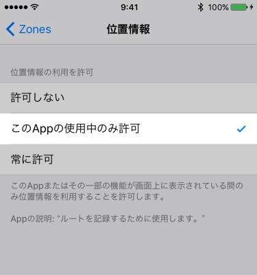

Zonesでは、GPSの位置情報を記録し、ルートマップとして表示します。
表示されない場合、以下をご確認ください。
以下のアクティビティタイプの場合に記録をします。
それ以外の場合は、記録されません
※ 但し「室内」の場合は記録しません。
「許可しない」となっていた場合は、許可に変更してください。

iOS 11 + watchOS 4 以上 かつ Zones ver1.4.0以上のときは、Appleヘルスケアにルート情報を書き込みします。
Appleヘルスケアの「ワークアウト経路」に読み書きの許可があるかを確認してください。
確認方法は、Apple ヘルスケアへの権限を確認するをご覧ください。
iOS 11 + watchOS 4 以上 かつ Zones ver1.4.0以上 のときは、Appleヘルスケアに登録されたルート情報を読み込みします。
Appleヘルスケアアプリにて、ルート情報が登録されているかを確認します。
ワークアウト経路がAppleヘルスケアに登録されていれば、Zones以外のアプリで登録されたワークアウトでもルートマップが表示されます。
※ Apple「アクティビィティ」アプリで、マップが表示されるかどうか？は、取得した位置情報に依存するようで、ワークアウト経路情報があっても表示されるとは限りません。
iOS 10以下 もしくは Zones ver1.3以下のときは、Zonesアプリで登録したワークアウトのみ、ルートマップが表示されます。
ルートマップ情報はApple WatchからiPhoneに送られますが、デバイス間の通信が正常に動作しない時があります。
Apple WatchとiPhoneが正常に通信できるかを試すため、Apple Watchの設定画面から「同期する」をタップしてください。
通信が行えない場合は、アプリの再起動、Apple Watchの再起動をお試しください。
Appleヘルスケア(HealthKit)の状態により、ルート情報がiPhoneに同期されるのが遅れる場合があるようです。
これは、Appleヘルス（HealthKit）の状態に依存し、Zonesアプリには依存しません。
暫くお待ちいただいても反映されないようであれば、Apple Watchの再起動をお試しください。
位置情報の精度が悪い場合は記録されないことがあります。
精度を上げるため、WiFiをオンにしてお試しください。
※ Zonesでは、HorizontalAccuracyが100m以下の位置情報を保存しています。